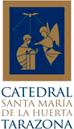

Información
Realización técnica:
Trazacultura S.L. - www.trazacultura.es
Aragón Virtual - www.aragonvirtual.es
Textos y documentación: Pablo Alfonso Matute
Fotografías y panorámicas 360º: Ramón Salanova Aznar
Todas las fotografías incluidas están sujetas a derechos de autor y su uso no autorizado esta penado por la Ley de Propiedad Intelectual. El fotógrafo, autor de la obra gráfica, cede el derecho de reproducción de dichas fotografías únicamente para la presente obra y su publicación en la misma no supone la transmisión de su propiedad, sino únicamente la de su reproducción temporal como parte integrante de la presente visita virtual.
Copyright: De las fotografías del interior de la Catedral © Excmo. Cabildo de la Catedral de Tarazona
Exposición semipermanente en el claustro "La Catedral de Tarazona. Plan Director y Restauración".
Comisariado: Equipo Plan Director - Dirección: Fernando Aguerri, Arquitecto.
Planta General de la Catedral de Tarazona. 2009 Fernando Aguerri y José Ignacio Aguerri.
Plano de la ciudad de Tarazona propiedad de Fundación Tarazona Monumental; Diseño: Laberinto de las Artes.
Música: Extracto de "O admirabile commercium" de Música del 1500 en la Catedral de Tarazona interpretado por Parnaso Español.
Aplicación para móvil realizada por Veintiocho Estudio Creativo - www.veintiocho.com
Realiza:
Colabora:

©2013 Todos los derechos reservados